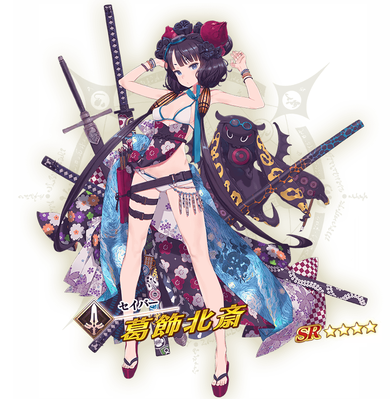
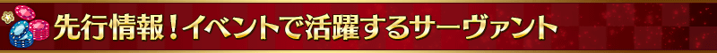

預定舉辦期間限定活動「見參！ 拉斯維加斯御前試合～泳裝劍豪七色勝負！」！
在觀測到微小特異點的北美大陸西部拉斯維加斯之地，賭上泳裝劍豪最強之座展開戰鬥！
本活動中進行主線關卡的話，活動限定從者「★4(SR)葛飾北齋(Saber)」會以期間限定加入。
更推進主線關卡，讓活動限定「★4(SR)葛飾北齋(Saber)」正式加入吧！
※本頁面皆為開發中圖片。會有與實際圖片相異的情況。
◆活動舉辦預定◆
2019年8月中旬
◆活動參加條件◆
滿足以下條件的御主才能參加
・通過「特異點F 炎上汙染都市 冬木」

本活動的期間中，強化「★4(SR)葛飾北齋(Saber)」時的獲得經驗值變成2倍。
是讓成為活動加成對象的「★4(SR)葛飾北齋(Saber)」等級一口氣上升的機會！



本活動的期間中，下表的從者在活動關卡中會得到「自身的攻擊威力提升」與「絆點數獲得量提升」的加成！
強化對象從者，挑戰活動吧！
※活動加成的效果量因從者而異。
※瑪琇・基利艾拉特的「絆點數獲得量提升」效果，是所謂「我方全體含候補的絆點數獲得量提升」的效果。支援時此效果無效。
※自8月9日(五) 17:00，在從者選擇畫面和從者強化畫面等，追加「下次活動對象」篩選器。
由於是只顯示於活動活躍從者的便利功能，敬請活用。
【活動加成的對象從者】
| 職階 | 稀有度 | 從者名 |
|---|---|---|
| Saber | ★★★★ | 葛飾北齋 |
| ★★★★ | 齊格飛 | |
| ★★★★ | 女王梅芙 | |
| ★★★★ | 弗蘭肯斯坦 | |
| Archer | ★★★★★ | 阿爾托莉亞・潘德拉剛 |
| ★★★★★ | 貞德 | |
| ★★★★ | 安妮・伯妮＆瑪莉・瑞德 | |
| ★★★★ | 海倫娜・布拉瓦茨基 | |
| ★★★ | 羅賓漢 | |
| Lancer | ★★★★★ | 玉藻前 |
| ★★★★ | 茨木童子 | |
| ★★★★ | 清姬 | |
| ★★★★ | 源賴光 | |
| Rider | ★★★★★ | 阿爾托莉亞・潘德拉剛〔Alter〕 |
| ★★★★★ | 李奧納多・達文西 | |
| ★★★★ | 伊絲塔 | |
| ★★★★ | 莫德雷德 | |
| Caster | ★★★★★ | 尼祿・克勞狄烏斯 |
| ★★★★★ | 梅林 | |
| ★★★★ | 吉爾伽美什 | |
| ★★★★ | 瑪莉・安東尼 | |
| Assassin | ★★★★ | 牛若丸 |
| ★★★★ | 斯卡哈 | |
| ★★★★ | 尼托克里絲 | |
| ★★★ | 風魔小太郎 | |
| Berserker | ★★★★ | 織田信長 |
| ★★★★ | 貞德〔Alter〕 | |
| Ruler | ★★★★ | 瑪爾大 |
| Avenger | ★★★★★ | 巖窟王 |
| Alterego | ★★★★ | Passionlip |
| MoonCancer | ★★★★★ | BB |
| Foreigner | ★★★★ | 謎之女主角XX |
| Shielder | ★★★ | 瑪琇・基利艾拉特 |
※就算成為對象從者，也會有不在本活動的主線劇情登場的情況。